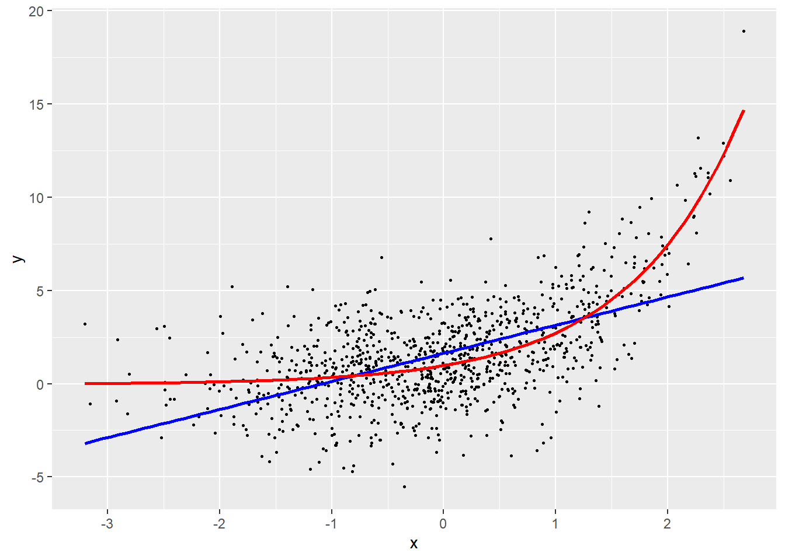
11 Modèles généralisés additifs
Dans les précédents chapitres, nous avons eu l’occasion d’explorer toute une panoplie de modèles : régressions linéaires, modèles généralisés, modèles généralisés à effets mixtes et modèles multiniveaux. Dans ce chapitre, nous abordons une nouvelle extension dans le monde des régressions : les modèles généralisés additifs (Generalized additive model en anglais — GAM). Cette extension a pour but de permettre de modéliser des relations non linéaires entre les variables indépendantes et la variable dépendante.
Liste des packages utilisés dans ce chapitre
- Pour créer des graphiques :
-
ggplot2le seul, l’unique! -
ggpubrpour combiner des graphiques et réaliser des diagrammes. -
metRpour placer des étiquettes sur des isolignes.
-
- Pour jouer avec des splines :
-
splines2pour construire les fonctions de base de nombreuses splines. -
segmentedpour ajuster des modèles avec des coefficients variant par segment.
-
- Pour ajuster des modèles GAM :
-
mgcv, le package de référence pour ajuster des GAM dans R! -
gamlss, un second package très flexible pour ajuster des GAM. -
gamlss.add, une extension degamlssajoutant des distributions supplémentaires.
-
- Pour analyser des modèles GAM :
-
itsadugpour notamment extraire certains résultats d’un GAM. -
mixeduppour notamment extraire les effets aléatoires d’un GAM. -
DHARMapour le diagnostic des résidus simulés.
-
11.1 Introduction
Puisque les modèles GAM sont une extension des modèles GLM, ils peuvent s’appliquer à des modèles pour des variables indépendantes qualitatives, de comptage ou continues. Nous l’appliquons ici, à titre d’illustration, à une variable indépendante continue. Pour rappel, la formule décrivant un modèle linéaire généralisé (GLM) utilisant une distribution normale et une fonction de lien identitaire est la suivante :
\[ \begin{aligned} &Y \sim Normal(\mu,\sigma)\\ &g(\mu) = \beta_0 + \beta X\\ &g(x) = x \end{aligned} \tag{11.1}\]
Les coefficients \(\beta\) permettent de quantifier l’effet des variables indépendantes (X) sur la moyenne (l’espérance) (\(\mu\)) de la variable dépendante (Y). Un coefficient \(\beta_k\) négatif indique que, si la variable \(X_k\) augmente, alors la variable Y tend à diminuer et inversement, si le coefficient est positif. L’inconvénient de cette formulation est que le modèle est capable de capter uniquement des relations linéaires entre ces variables. Or, il existe de nombreuses situations dans lesquelles une variable indépendante a un lien non linéaire avec une variable dépendante; voici quelques exemples :
Si nous mesurons le niveau de bruit émis par une source sonore (variable dépendante) à plusieurs endroits et que nous tentons de prédire l’intensité sonore en fonction de la distance à la source (variable indépendante), nous pouvons nous attendre à observer une relation non linéaire entre les deux. En effet, le son étant une énergie se dispersant selon une sphère dans l’espace, son intensité est inversement proportionnelle au carré de la distance avec la source sonore.
La concentration de la pollution atmosphérique en ville suit généralement des patrons temporels et spatiaux influencés directement par la météorologie et les activités humaines. Autrement dit, il serait absurde d’introduire l’espace de façon linéaire (avec un gradient nord-sud ou est-ouest), ou le moment de la journée de façon linéaire (comme si la pollution augmentait du matin au soir ou inversement). En guise d’exemple, la figure 11.1, tirée de Gelb et Apparicio (2020), illustre bien ces variations temporelles pour deux polluants (le dioxyde d’azote et l’ozone).

11.1.1 Non-linéarité fonctionnelle
Il existe de nombreuses façons d’introduire des relations non linéaires dans un modèle. La première et la plus simple à mettre en œuvre est de transformer la variable indépendante à l’aide d’une fonction inverse, exponentielle, logarithmique ou autre.
Prenons un premier exemple avec une variable Y que nous tentons de prédire avec une variable X, présenté à la figure 11.2. Si nous ajustons une droite de régression à ces données (en bleu), nous constatons que l’augmentation de X est associée à une augmentation de Y. Cependant, la droite de régression est très éloignée des données et ne capte qu’une petite partie de la relation. Une lecture attentive permet de constater que l’effet de X sur Y augmente de plus en plus rapidement à mesure que X augmente. Cette forme est caractéristique d’une relation exponentielle. Nous pouvons donc transformer la variable X avec la fonction exponentielle afin d’obtenir un meilleur ajustement (en rouge).
La figure 11.3 illustre trois autres situations avec les fonctions logarithmique, logistique inverse et racine carrée. Cette approche peut donner des résultats intéressants si vous disposez d’une bonne justification théorique sur la forme attendue de la relation entre X et Y.
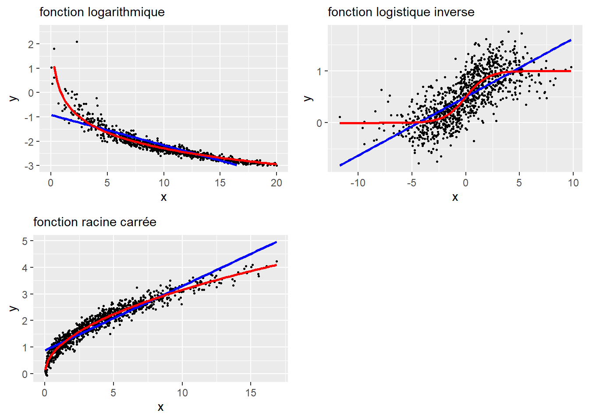
Il existe également des cas de figure dans lesquels aucune fonction ne donne de résultats pertinents, comme illustré à la figure 11.4. Nous constatons facilement qu’aucune des fonctions proposées n’est capable de bien capter la relation entre les deux variables. Puisque cette relation est complexe, il convient alors d’utiliser une autre stratégie pour la modéliser.
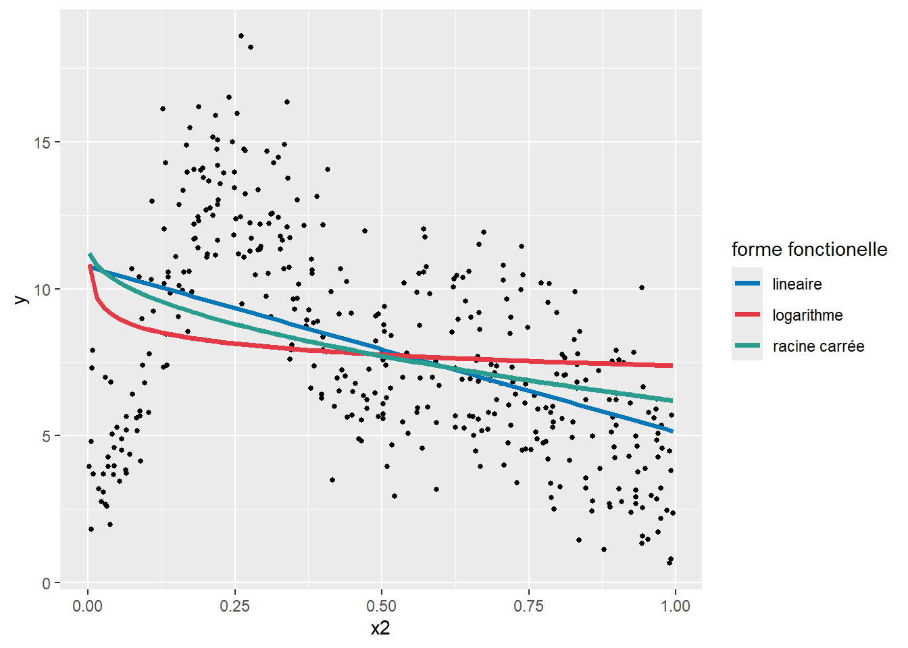
11.1.2 Non-linéarité avec des polynomiales
Nous avons vu, dans le chapitre sur la régression simple (section 7.5.1.1), qu’il est possible d’utiliser des polynomiales pour ajuster des relations non linéaires. Pour rappel, il s’agit simplement d’ajouter à un modèle la variable X à différents exposants (\(X+X^2+\dots+X^k\)). Chaque exposant supplémentaire (chaque ordre supplémentaire) permet au modèle d’ajuster une relation plus complexe. Rien de tel qu’un graphique pour illustrer le tout (figure 11.5).
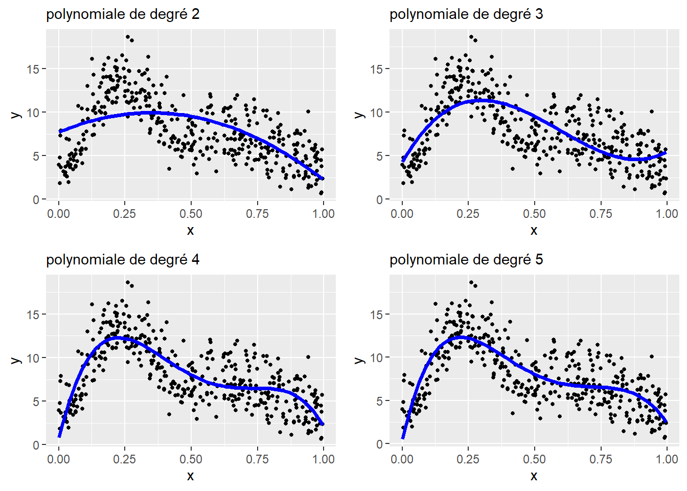
L’enjeu est de sélectionner le bon nombre de degrés de la polynomiale pour le modèle. Chaque degré supplémentaire constitue une nouvelle variable dans le modèle, et donc un paramètre supplémentaire. Un trop faible nombre de degrés produit des courbes trop simplistes, alors qu’un nombre trop élevé conduit à un surajustement (overfitting en anglais) du modèle. La figure 11.6 illustre ces deux situations.
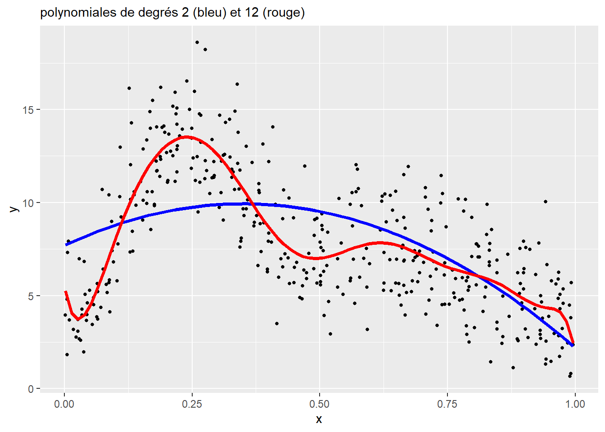
Un des problèmes inhérents à l’approche des polynomiales est la difficulté d’interprétation. En effet, les coefficients ne sont pas directement interprétables et seule une figure représentant les prédictions du modèle permet d’avoir une idée de l’effet de la variable X sur la variable Y.
11.1.3 Non-linéarité par segments
Un compromis intéressant offrant une interprétation simple et une relation potentiellement complexe consiste à découper la variable X en segments, puis d’ajuster un coefficient pour chacun de ces segments. Nous obtenons ainsi une ligne brisée et des coefficients faciles à interpréter (figure 11.7). Nous ne présentons pas d’exemple d’application dans R, mais sachez que le package segmented permet d’ajuster ce type de modèle.
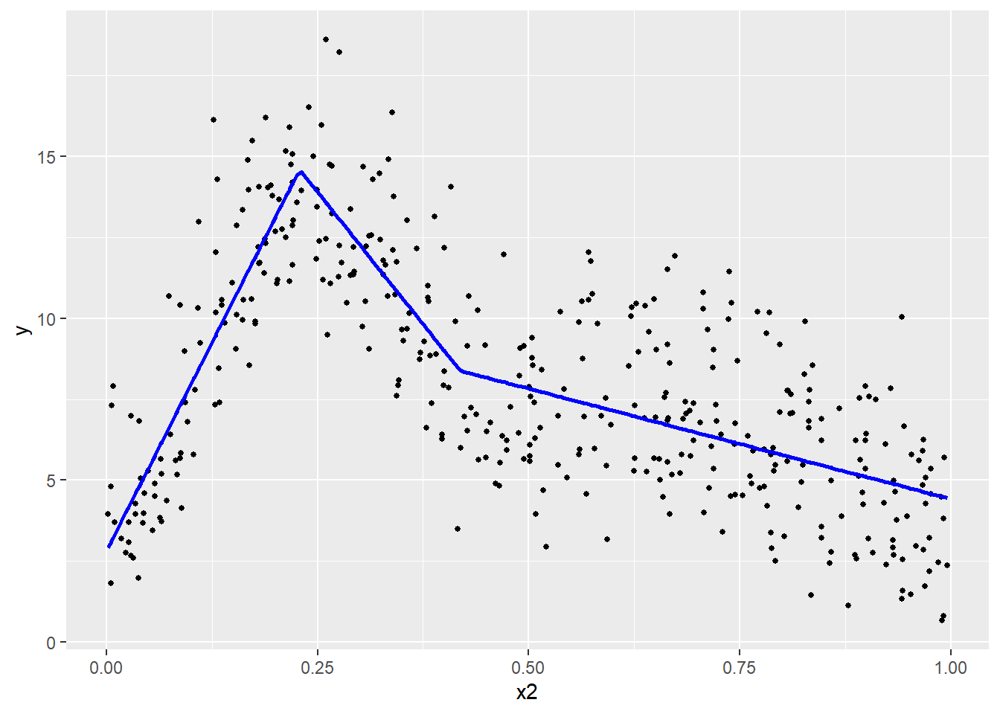
L’enjeu est alors de déterminer le nombre de points et la localisation de points de rupture. L’inconvénient majeur de cette approche est qu’en réalité, peu de phénomènes sont marqués par des ruptures très nettes.
À la figure 11.7, nous avons divisé la variable X en trois segments (\(k_1\), \(k_2\) et \(k_3\)), définis respectivement avec les intervalles suivants : [0,00-0,22], [0,22-0,41] et [0,41-1,00]. Concrètement, cela revient à diviser la variable X en trois nouvelles variables \(X_{k1}\), \(X_{k2}\), et \(X_{k3}\). La valeur de \(X_{ik}\) est égale à \(x_i\) si \(x_i\) se trouve dans l’intervalle propre à k, et à 0 autrement. Ici, nous obtenons trois coefficients :
le premier est positif, une augmentation de X sur le premier segment est associée à une augmentation de Y;
le second est négatif, une augmentation de X sur le second segment est associée à une diminution de Y;
le troisième est aussi négatif, une augmentation de X sur le troisième segment est associée à une diminution de Y, mais moins forte que pour le second segment.
11.1.4 Non-linéarité avec des splines
La dernière approche, et certainement la plus flexible, est d’utiliser ce que l’on appelle une spline pour capter des relations non linéaires. Une spline est une fonction créant des variables supplémentaires à partir d’une variable X et d’une fonction de base. Ces variables supplémentaires, appelées bases (basis en anglais), sont ajoutées au modèle; la sommation de leurs valeurs multipliées par leurs coefficients permet de capter les relations non linéaires entre une variable dépendante et une variable indépendante. Le nombre de bases et leur localisation (plus souvent appelé nœuds) permettent de contrôler la complexité de la fonction non linéaire.
Prenons un premier exemple simple avec une fonction de base triangulaire (tent basis en anglais). Nous créons ici une spline avec sept nœuds répartis équitablement sur l’intervalle de valeurs de la variable X. Les sept bases qui en résultent sont présentées à la figure 11.8. Dans cette figure, chaque sommet d’un triangle correspond à un nœud et chaque triangle correspond à une base.
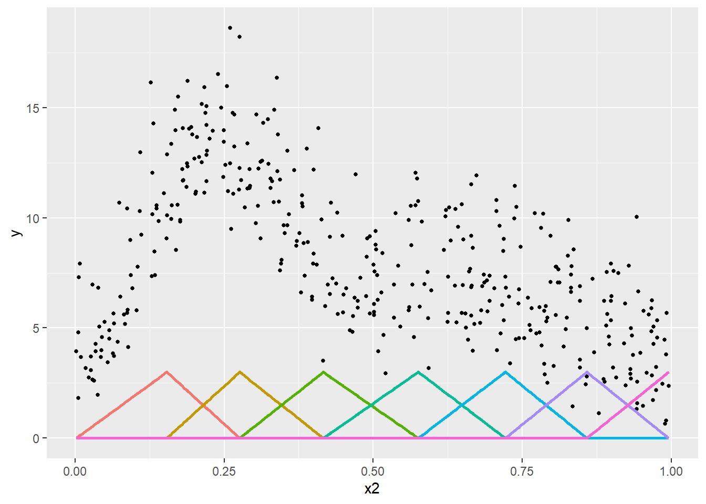
En ajoutant ces bases dans notre modèle de régression, nous pouvons ajuster un coefficient pour chacune et le représenter en multipliant ces bases par les coefficients obtenus avec une simple régression linéaire (figure 11.9).
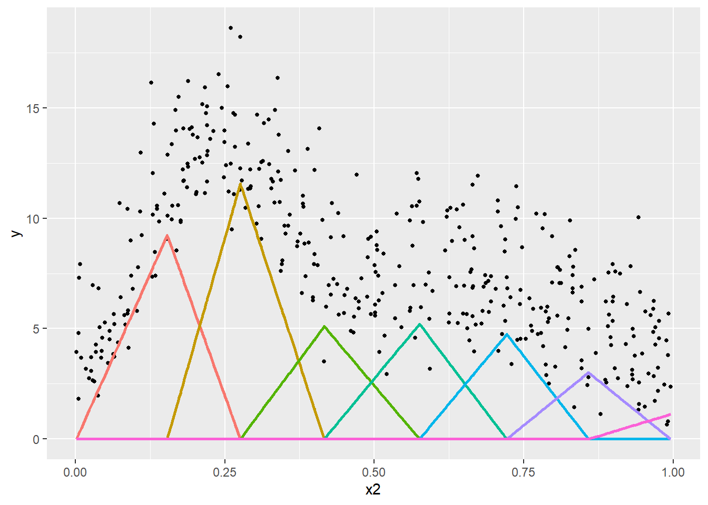
Nous remarquons ainsi que les bases correspondant à des valeurs plus fortes de Y ont reçu des coefficients plus élevés. Pour reconstituer la fonction non linéaire, il suffit d’additionner ces bases multipliées par leurs coefficients, soit la ligne bleue à la figure 11.10.
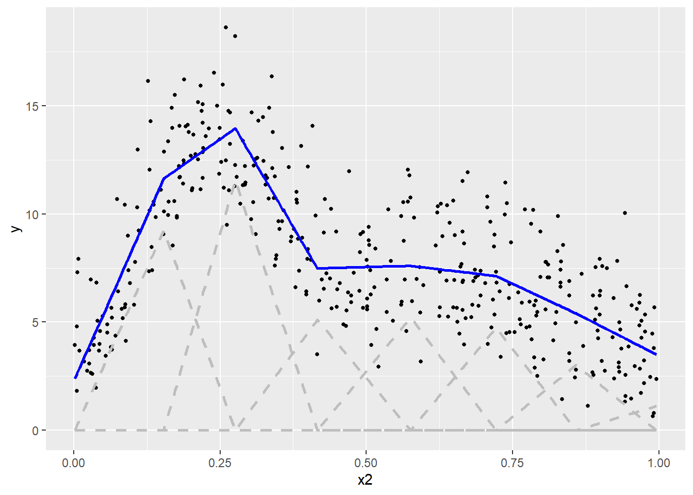
La fonction de base triangulaire est intéressante pour présenter la logique qui sous-tend les splines, mais elle est rarement utilisée en pratique. On lui préfère généralement d’autres formes donnant des résultats plus lisses comme les B-spline quadratiques, B-spline cubiques, M-spline, Duchon spline, etc.
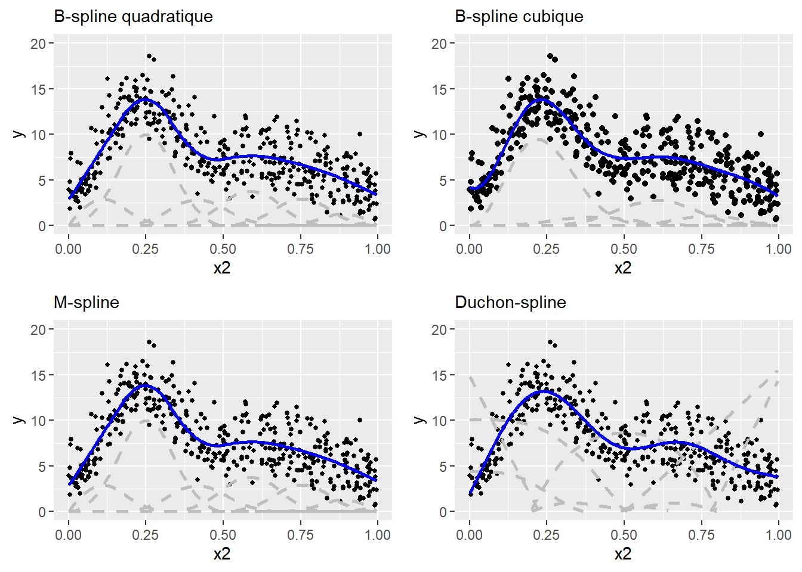
Les approches que nous venons de décrire sont regroupées sous l’appellation de modèles additifs. Dans les prochaines sous-sections, nous nous concentrons davantage sur les splines du fait de leur plus grande flexibilité.
11.2 Spline de régression et spline de lissage
Dans les exemples précédents, nous avons vu que la construction d’une spline nécessite d’effectuer deux choix importants : le nombre de nœuds et leur localisation. Un trop grand nombre de nœuds conduit à un surajustement du modèle alors qu’un trop faible nombre de nœuds conduit à un sous-ajustement. Lorsque ces choix sont effectués par l’utilisateur et que les bases sont ajoutées manuellement dans le modèle tel que décrit précédemment, nous parlons alors de splines de régression (Regression Spline en anglais).
Une approche a été proposée pour faciliter le choix du nombre de nœuds, il s’agit de splines de lissage (smoothing spline en anglais). L’idée derrière cette approche est d’introduire dans le modèle une pénalisation associée avec le nombre de nœuds (ou degré de liberté) de la spline, dans un souci de parcimonie : chaque nœud supplémentaire doit suffisamment contribuer au modèle pour être conservé. Il n’est pas nécessaire ici de rentrer dans le détail mathématique de cette pénalisation qui est un peu complexe. Retenez simplement qu’elle dépend d’un paramètre appelé \(\lambda\) :
plus \(\lambda\) tend vers 0, plus la pénalisation est faible et plus la spline de lissage devient une simple spline de régression;
à l’inverse, plus elle est forte, plus la pénalité est importante, au point que la spline peut se résumer à une simple ligne droite.
Cela est illustré à la figure 11.12 comprenant trois splines avec 20 nœuds et des valeurs \(\lambda\) différentes contrôlant la force de la pénalité.
Bien évidemment, nous constatons qu’avec la spline de régression (non pénalisée), 20 nœuds conduisent à un fort surajustement du modèle. En revanche, les splines de lissage (pénalisées) permettent de corriger ce problème de surajustement. Toutefois, une valeur trop importante de \(\lambda\) conduit à un sous-ajustement du modèle (ici \(\lambda = 3\) et \(\lambda = 100\), lignes verte et bleue).
Avec les splines de lissage, l’enjeu est de sélectionner une valeur optimale de \(\lambda\). Le plus souvent, les packages R estiment eux-mêmes ce paramètre à partir des données utilisées dans le modèle. Toutefois, gardez en mémoire que vous pouvez modifier ce paramètre. Mentionnons également que les splines de lissage peuvent être reparamétrées dans un modèle pour être intégrées comme des effets aléatoires. Dans ce cas-ci, \(\lambda\) est remplacé par un simple paramètre de variance directement estimé dans le modèle (Wood 2004).
11.3 Interprétation d’une spline
L’interprétation d’une spline se fait à l’aide de graphiques. En effet, puisqu’elle est composée d’un ensemble de coefficients appliqués à des bases, il est difficile d’interpréter directement ces derniers. Nous préférons alors représenter la fonction obtenue à l’aide d’un graphique, illustrant son effet marginal. Ce graphique est construit en trois étapes :
Créer un jeu de données fictif dans lequel l’ensemble des variables indépendantes sont fixées à leurs moyennes respectives, sauf la variable pour laquelle nous souhaitons représenter la spline. Pour cette dernière, un ensemble de valeurs allant de son minimum à son maximum est utilisé;
Utiliser le modèle pour prédire les valeurs attendues de la variable dépendante pour chacune des observations fictives ainsi créées;
Afficher les prédictions obtenues dans un graphique.
Notez ici qu’un graphique des effets marginaux se base sur les prédictions du modèle. Si un modèle est mal ajusté, les prédictions ne seront pas fiables et il sera inutile d’interpréter la spline obtenue.
Il est aussi possible, dans le cas des splines de lissage, d’interpréter les estimated degrees of freedom (EDF) qui constituent une approximation du nombre de nœuds de la spline. S’ils ne nous renseignent pas sur la forme de la spline, ils nous indiquent son niveau de complexité. Une spline avec un EDF de 1 est en réalité un simple terme linéaire. Plus l’EDF augmente, plus la spline est complexe.
11.4 Multicolinéarité non linéaire
Lorsque des splines sont ajoutées dans un modèle, il est nécessaire de vérifier si ces dernières ne posent pas un problème de multicolinéarité. Cependant, le VIF ne peut plus être utilisé du fait de la non-linéarité des relations modélisées. Il est alors nécessaire d’utiliser une autre mesure : la concurvité (concurvity) permettant de mesurer sur une échelle allant de 0 à 1 à quel point deux splines ont en réalité capturé le même effet et se substituent l’une à l’autre. Une valeur de 0 indique une absence totale de concurvité alors qu’une valeur de 1 indique que deux splines sont rigoureusement identiques (modèle non identifiable).
11.5 Splines avancées
Jusqu’ici, nous avons seulement présenté le cas le plus simple pour lequel une spline est construite à partir d’une seule variable dépendante continue, mais les splines peuvent être utilisées dans de nombreux autres contextes et ont une incroyable flexibilité. Nous détaillons ici trois exemples fréquents : les splines cycliques, les splines variant par groupe et les splines multivariées. Pour une description complète des effets non linéaires possibles avec mgcv, n’hésitez pas à consulter sa documentation.
| Type | Code | Description |
|---|---|---|
| spline cyclique | s(x, bs = 'cc') |
Une spline cyclique doit être utilisée si le 0 de la variable X correspond également à sa valeur maximum. Un bon exemple est le temps dans une journée, car 24 h est équivalent à 0 h |
| spline variant par groupe | s(x, by = x2) |
Une spline variant par groupe permet d’ajuster une spline à une variable X1 différente pour chaque groupe identifié par une variable qualitative X2 |
| spline bivariée | s(x1,x2) |
Une spline bivariée est utilisée pour modéliser l’interaction non linéaire de deux variables X1 et X2 s’exprimant dans la même unité (typiquement des coordonnées géographiques cartésiennes) |
| spline d’interaction complète | te(x1,x2) |
Une spline d’interaction permet de modéliser l’interaction non linéaire de deux variables continues pouvant s’exprimer dans des unités différentes, elle combine les effets spécifiques de chacune des deux variables et leur interaction |
| spline d’interaction partielle | s(x1) + s(x2) + ti(x1,x2) |
Une spline d’interaction partielle permet de distinguer les effets non linéaires individuels de deux variables de leur interaction non linéaire |
11.5.1 Splines cycliques
Une spline cyclique est une extension d’une spline classique dont les bases aux extrémités sont spécifiées de telle sorte que la valeur au départ de la spline soit la même que celle à la fin de la spline. Cela permet à la spline de former une boucle, ce qui est particulièrement intéressant pour des variables dont le 0 et la valeur maximale correspondent en réalité à la même valeur. L’exemple le plus parlant est certainement le cas d’une variable représentant la mesure d’un angle en degrés. Les valeurs de 0 et 360 sont identiques et les valeurs 350 et 10 sont toutes les deux à une distance de 10 degrés de 0. Un autre exemple possible serait de considérer l’heure comme une variable continue; dans ce cas, 24 h et 0 h signifient la même chose.
Prenons un exemple concret. Nous souhaitons modéliser la concentration de dioxyde d’azote (NO2) à Paris, mesurée par un ensemble de stations fixes. Nous pourrions nous attendre à ce que le NO2 suive chaque jour un certain patron. Concrètement, à proximité d’axes routiers majeurs, nous nous attendons à observer des pics suivant les flux pendulaires. À la figure 11.13, nous retrouvons bien les deux pics attendus correspondant aux heures de pointe du matin et du soir. Aussi, comme indiqué par la ligne rouge, la valeur prédite par la spline est la même à 24 h et à 0 h.
11.5.2 Splines par groupe
Tel qu’abordé dans les chapitres précédents, il arrive régulièrement que les observations appartiennent à différents groupes. Dans ce cas de figure, nous pouvons être amenés à vérifier si la relation décrite par une spline est identique pour chacun des groupes d’observations. Il s’agit alors d’ajuster une spline différente par groupe. Dans l’exemple précédent, chaque valeur de NO2 a été mesurée par une station fixe de mesure spécifique. Compte tenu du fait que l’environnement autour de chaque station est particulier, nous pourrions s’attendre à ce que les valeurs de NO2 ne présentent pas exactement les mêmes patrons journaliers pour chaque station.
À la figure 11.14, il est possible de constater que le NO2 suit globalement le même patron temporel pour l’ensemble des stations à l’exception de trois d’entres-elles. Il s’agit en réalité de stations situées dans des secteurs ruraux de la région parisienne, et donc moins impactées par le trafic routier.
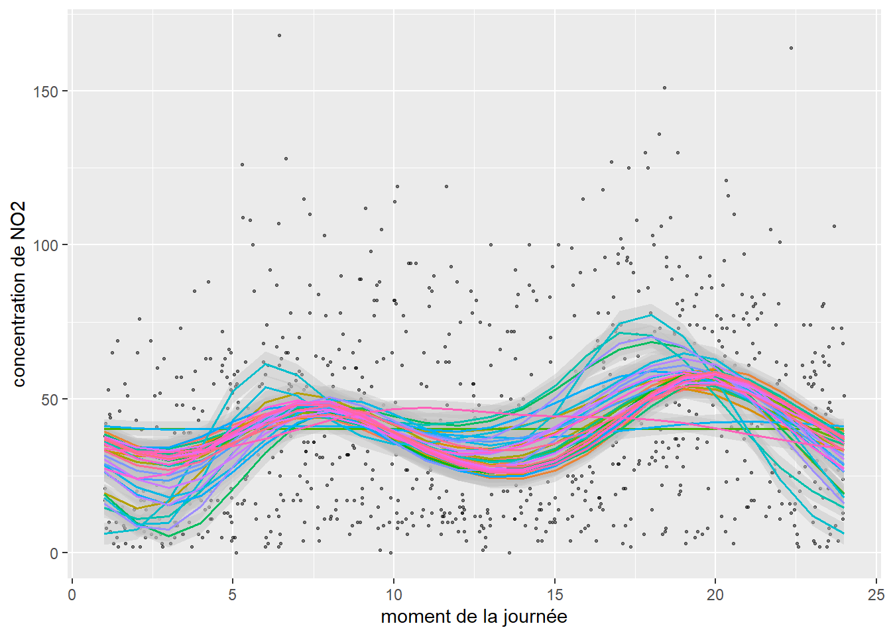
11.5.3 Splines multivariées et splines d’interaction
Jusqu’ici, nous n’avons considéré que des splines ne s’appliquant qu’à une seule variable indépendante; cependant, il est possible de construire des splines multivariées s’ajustant simultanément sur plusieurs variables indépendantes. L’objectif est alors de modéliser les potentielles interactions non linéaires entre les variables indépendantes combinées dans une même spline. Prenons un exemple concret, dans la section sur les modèles GLM, nous avons modélisé la couverture des aires de diffusion (AD) à Montréal par des îlots de chaleur. Parmi les variables indépendantes, nous avons notamment utilisé la distance au centre-ville ainsi que la part de la surface végétalisée des AD. Nous pourrions formuler l’hypothèse que ces deux variables influencent conjointement et de façon non linéaire la proportion de la surface d’îlot de chaleur dans chaque AD. Pour représenter une spline sur plusieurs dimensions, nous utilisons alors une carte de chaleur dont la couleur représente la valeur de la variable dépendante prédite en fonction des deux variables indépendantes.
Il est important de distinguer la spline d’interaction et la spline multivariée. La première est utilisée lorsque les variables indépendantes introduites dans la spline ne sont pas exprimées sur la même échelle et n’évoluent pas conjointement. L’exemple donné ci-dessus avec les variables de végétation et de distance au centre-ville est un exemple de spline d’interaction, la première variable étant exprimée en pourcentage et l’autre en mètres. De plus, ces deux variables ne sont pas conjointes, mais bien distinctes l’une de l’autre. Un cas typique où une spline multivariée serait à privilégier est le cas de l’ajout des coordonnées spatiales dans le modèle. L’emplacement des AD est mesuré par deux variables (coordonnées spatiales x et y) toutes les deux exprimées en mètres évoluant conjointement, au sens où les coordonnées x n’interagissent pas avec les coordonnées y, mais forment à elles deux un espace propre. Au-delà de la problématique de l’échelle des données, il est important de retenir que les splines d’interaction tendent à être davantage pénalisées que les splines multivariées.
La spline d’interaction représentée à la figure 11.15 indique que les AD avec la plus grande proportion de leur surface couverte par des îlots de chaleur sont situées à moins de 25 kilomètres du centre-ville, au-delà de cette distance, cette proportion chute en bas de 0,1, soit 10 % de la surface de l’AD. En revanche, à proximité du centre-ville (moins d’un kilomètre), même les AD disposant d’un fort pourcentage de surface végétalisée sont tout de même marquées par un fort pourcentage de surface couverte par des îlots de chaleur.
Les splines bivariées sont fréquemment utilisées pour capturer un potentiel patron spatial dans les données. En effet, si nous disposons des coordonnées spatiales de chaque observation (x, y), il est possible d’ajuster une spline bivariée sur ces coordonnées, contrôlant ainsi l’effet de l’espace.
Il n’y a pas de limite théorique au nombre de variables qui peuvent être ajoutées dans une spline d’interaction ou multivariée. Notez cependant que plus le nombre de dimensions augmente, plus la fonction à estimer est complexe et plus le volume de données nécessaire est grand et doit couvrir densément l’ensemble de l’espace d’échantillonnage multidimensionnel.
11.6 Mise en œuvre dans R
Il est possible d’ajuster des splines de régression dans n’importe quel package permettant d’ajuster des coefficients pour un modèle de régression. Il suffit de construire les bases des splines en amont à l’aide du package splines2 et de les ajouter directement dans l’équation de régression. En revanche, il est nécessaire d’utiliser des packages spécialisés pour ajuster des splines de lissage. Parmi ceux-ci, mgcv est probablement le plus populaire du fait de sa (très) grande flexibilité, suivi des packages gamlss, gam et VGAM. Nous comparons ici les deux approches, puis nous tentons d’améliorer le modèle que nous avons ajusté pour prédire le pourcentage de surface couverte par des îlots de chaleur dans les aires de diffusion de Montréal, dans une perspective d’équité environnementale. Pour rappel, la variable dépendante est exprimée en pourcentage et nous utilisons une distribution bêta pour la modéliser.
Dans notre première analyse de ces données, nous avons ajusté une polynomiale d’ordre 2 pour représenter un potentiel effet non linéaire de la végétation sur les îlots de chaleur. Nous remplaçons à présent ce terme par une spline de régression en sélectionnant quatre nœuds.
library(splines2)
# Création des bases de la spline
basis <- bSpline(x = dataset$prt_veg, df =4, intercept = FALSE)
# Ajouter les bases au DataFrame
basisdf <- as.data.frame(basis)
names(basisdf) <- paste('spline',1:ncol(basisdf), sep='')
dataset <- cbind(dataset, basisdf)
# Ajuster le modèle
model0 <- gam(hot ~
A65Pct + A014Pct + PopFRPct + PopMVPct +
spline1 + spline2 + spline3 + spline4 + Arrond,
data = dataset, family = betar(link = "logit"))Nous pouvons à présent ajuster une spline de lissage et laisser mgcv déterminer son niveau de complexité.
Notez ici que la syntaxe à employer est très simple, il suffit de spécifier s(prt_veg) pour indiquer à la fonction gam que vous souhaitez ajuster une spline pour la variable prt_veg. Nous pouvons à présent comparer l’ajustement des deux modèles en utilisant la mesure de l’AIC.
# Comparaison des AIC
AIC(refmodel, model0, model1) df AIC
refmodel 40.00000 -6399.784
model0 42.00000 -6419.630
model1 44.61065 -6417.562Nous constatons que la valeur de l’AIC du second modèle est plus réduite, indiquant un meilleur ajustement du modèle avec une spline de régression. Notons cependant que la différence avec la spline de lissage est anecdotique (deux points de l’AIC) et que nous connaissions a priori le bon nombre de nœuds à utiliser. Pour des relations plus complexes, les splines de lissage ont tendance à nettement mieux performer. Voyons à présent comment représenter ces trois termes non linéaires.
# Création d'un DataFrame de prédiction dans lequel seule
# la variable prt_veg varie.
dfpred <- data.frame(
prt_veg = seq(min(dataset$prt_veg), max(dataset$prt_veg), 0.5),
A65Pct = mean(dataset$A65Pct),
A014Pct = mean(dataset$A014Pct),
PopFRPct = mean(dataset$PopFRPct),
PopMVPct = mean(dataset$PopMVPct),
Arrond = "Verdun"
)
# Recréation des bases de la spline de régression
# pour les nouvelles observations
nvl_bases <- data.frame(predict(basis, newx = dfpred$prt_veg))
names(nvl_bases) <- paste('spline',1:ncol(basisdf), sep='')
dfpred <- cbind(dfpred, nvl_bases)
# Définition de la fonction inv.logit, soit l'inverse de la fonction
# de lien du modèle pour retrouver les prédictions dans l'échelle
# originales des données
inv.logit <- function(x){exp(x)/(1+exp(x))}
# Utilisation des deux modèles pour effectuer les prédictions
predref <- predict(refmodel, newdata = dfpred, type = 'link', se.fit = TRUE)
predmod0 <- predict(model0, newdata = dfpred, type = 'link', se.fit = TRUE)
predmod1 <- predict(model1, newdata = dfpred, type = 'link', se.fit = TRUE)
# Calcul de la valeur prédite et construction des intervalles de confiance
dfpred$polypred <- inv.logit(predref$fit)
dfpred$poly025 <- inv.logit(predref$fit - 1.96 * predref$se.fit)
dfpred$poly975 <- inv.logit(predref$fit + 1.96 * predref$se.fit)
dfpred$regsplinepred <- inv.logit(predmod0$fit)
dfpred$regspline025 <- inv.logit(predmod0$fit - 1.96 * predmod0$se.fit)
dfpred$regspline975 <- inv.logit(predmod0$fit + 1.96 * predmod0$se.fit)
dfpred$splinepred <- inv.logit(predmod1$fit)
dfpred$spline025 <- inv.logit(predmod1$fit - 1.96 * predmod1$se.fit)
dfpred$spline975 <- inv.logit(predmod1$fit + 1.96 * predmod1$se.fit)
# Créer un graphique pour afficher les résultats
ggplot(dfpred) +
geom_ribbon(aes(x = prt_veg, ymin = poly025, ymax = poly975),
alpha = 0.4, color = "grey") +
geom_ribbon(aes(x = prt_veg, ymin = spline025, ymax = spline975),
alpha = 0.4, color = "grey") +
geom_ribbon(aes(x = prt_veg, ymin = regspline025, ymax = regspline975),
alpha = 0.4, color = "grey") +
geom_line(aes(y = polypred, x = prt_veg, color = "polynomiale"),
linewidth = 1) +
geom_line(aes(y = regsplinepred, x = prt_veg, color = "spline de régression"),
linewidth = 1)+
geom_line(aes(y = splinepred, x = prt_veg, color = "spline de lissage"),
linewidth = 1)Nous constatons que les trois termes renvoient des prédictions très similaires et qu’une légère différence n’est observable que pour les secteurs avec les plus hauts niveaux de végétation (supérieurs à 75 %).
Jusqu’ici, nous utilisons l’arrondissement dans lequel est comprise chaque aire de diffusion comme une variable nominale afin de capturer la dimension spatiale du jeu de données. Puisque nous avons abordé la notion de splines bivariées, il serait certainement plus efficace d’en construire une à partir des coordonnées géographiques (x,y) des centroïdes des aires de diffusion. En effet, il est plus probable que la distribution des îlots de chaleur suive un patron spatial continu sur le territoire plutôt que les délimitations arbitraires des arrondissements.
Notez ici que l’expression s(X,Y) permet de créer une spline bivariée à partir des coordonnées (x, y), soit deux colonnes présentes dans le jeu de données. Ces coordonnées sont exprimées toutes deux en mètres et n’interagissent pas ensemble au sens strict, nous devons donc ajuster une spline bivariée. Si vous avez besoin d’ajuster une spline d’interaction (notamment quand les variables sont dans des unités différentes), il est nécessaire d’utiliser une autre syntaxe te(X,Y) ou t2(X,Y) faisant appel à une structure mathématique légèrement différente, soit des tensor product smooths.
Puisque notre modèle intègre deux splines, nous devons nous assurer que nous n’avons pas de problème de concurvité, ce que nous pouvons faire avec la fonction concurvity du package mgcv.
values <- concurvity(model2, full = FALSE)
# Worst, estimation pessimiste de la concurvité
round(values$worst,3) para s(prt_veg) s(X,Y)
para 1 0.000 0.000
s(prt_veg) 0 1.000 0.458
s(X,Y) 0 0.458 1.000# Observed, estimation optimiste de la concurvité
round(values$observed,3) para s(prt_veg) s(X,Y)
para 1 0.000 0.000
s(prt_veg) 0 1.000 0.154
s(X,Y) 0 0.403 1.000# Estimate, estimation entre deux de la concurvité
round(values$estimate,3) para s(prt_veg) s(X,Y)
para 1 0.000 0.000
s(prt_veg) 0 1.000 0.142
s(X,Y) 0 0.358 1.000Nous pouvons ainsi constater des niveaux de concurvité tout à fait acceptables dans notre modèle. Des valeurs supérieures à 0,8 devraient être considérées comme alarmantes, surtout si elles sont reportées pour observed et estimate.
Voyons désormais, le résumé d’un modèle GAM tel que présenté dans R.
summary(model2)
Family: Beta regression(15.469)
Link function: logit
Formula:
hot ~ A65Pct + A014Pct + PopFRPct + PopMVPct + s(prt_veg) + s(X,
Y)
Parametric coefficients:
Estimate Std. Error z value Pr(>|z|)
(Intercept) -0.6050031 0.0645191 -9.377 < 2e-16 ***
A65Pct 0.0027671 0.0014072 1.966 0.0493 *
A014Pct -0.0019040 0.0027674 -0.688 0.4914
PopFRPct 0.0095992 0.0014323 6.702 2.06e-11 ***
PopMVPct 0.0010113 0.0008159 1.239 0.2152
---
Signif. codes: 0 '***' 0.001 '**' 0.01 '*' 0.05 '.' 0.1 ' ' 1
Approximate significance of smooth terms:
edf Ref.df Chi.sq p-value
s(prt_veg) 6.38 7.565 6731 <2e-16 ***
s(X,Y) 27.10 28.764 1349 <2e-16 ***
---
Signif. codes: 0 '***' 0.001 '**' 0.01 '*' 0.05 '.' 0.1 ' ' 1
R-sq.(adj) = 0.891 Deviance explained = 90.8%
-REML = -3234.3 Scale est. = 1 n = 3157La première partie du résumé comprend les résultats pour les effets fixes et linéaires du modèle. Ils s’interprètent comme pour ceux d’un GLM classique. La seconde partie présente les résultats pour les termes non linéaires. La valeur de p permet de déterminer si la spline a ou non un effet différent de 0. Une valeur non significative indique que la spline ne contribue pas au modèle. Les colonnes edf et Ref.df indiquent la complexité de la spline et peuvent être considérées comme une approximation du nombre de nœuds. Dans notre cas, la spline spatiale (s(X,Y)) est environ 5 fois plus complexe que la spline ajustée pour la végétation (s(prt_veg)). Cela n’est pas surprenant puisque la dimension spatiale (spline bivariée) du phénomène est certainement plus complexe que l’effet de la végétation. Notez ici que des valeurs edf et Ref.df proches de 1 signaleraient que l’effet d’un prédicteur est essentiellement linéaire et qu’il n’est pas nécessaire de recourir à une spline pour cette variable.
La dernière partie du résumé comprend deux indicateurs de qualité d’ajustement, soit le R2 ajusté et la part de la déviance expliquée.
AIC(refmodel, model1, model2) df AIC
refmodel 40.00000 -6399.784
model1 44.61065 -6417.562
model2 40.06053 -6596.884Nous pouvons constater que le fait d’introduire la spline spatiale dans le modèle contribue à réduire encore la valeur de l’AIC, et donc à améliorer le modèle. À ce stade, nous pourrions tenter de forcer la spline à être plus complexe en augmentant le nombre de nœuds.
# Augmentation de la complexité de la spline spatiale
model3 <- gam(hot ~
A65Pct + A014Pct + PopFRPct + PopMVPct +
s(prt_veg) + s(X,Y,k = 40),
data = dataset, family = betar(link = "logit"))
AIC(refmodel, model1, model2, model3) df AIC
refmodel 40.00000 -6399.784
model1 44.61065 -6417.562
model2 40.06053 -6596.884
model3 48.28633 -6639.955Cela a pour effet d’améliorer de nouveau le modèle. Pour vérifier si l’augmentation du nombre nœuds est judicieuse, il est possible de représenter le résultat des deux splines précédentes. Pour ce faire, nous proposons de calculer les valeurs prédites de la spline pour chaque localisation dans notre terrain d’étude, en le découpant préalablement en pixels de 100 de côté. Pour cette prédiction, nous maintenons toutes les autres variables à leur moyenne respective afin d’évaluer uniquement l’effet de la spline spatiale.
library(viridis)
library(metR) # pour placer des étiquettes sur les isolignes
# Création d'un DataFrame fictif pour les prédictions
dfpred <- expand.grid(
prt_veg =mean(dataset$prt_veg),
A65Pct = mean(dataset$A65Pct),
A014Pct = mean(dataset$A014Pct),
PopFRPct = mean(dataset$PopFRPct),
PopMVPct = mean(dataset$PopMVPct),
X = seq(min(dataset$X), max(dataset$X),100),
Y = seq(min(dataset$Y), max(dataset$Y),100)
)
dfpred$predicted1 <- predict(model2, newdata = dfpred, type = 'response')
dfpred$predicted2 <- predict(model3, newdata = dfpred, type = 'response')
# Centrage des prédictions
dfpred$predicted1 <- dfpred$predicted1 - mean(dfpred$predicted1)
dfpred$predicted2 <- dfpred$predicted2 - mean(dfpred$predicted2)
# Représentation des splines
plot1 <- ggplot(dfpred) +
geom_raster(aes(x = X, y = Y, fill = predicted1)) +
geom_point(aes(x = X, y = Y),
size = 0.2, alpha = 0.4,
color = "black", data = dataset)+
geom_contour(aes(x = X, y = Y, z = predicted1), binwidth = 0.1,
color = "white", linetype = 'dashed') +
geom_text_contour(aes(x = X, y = Y, z = predicted1),
color = "white", binwidth = 0.1)+
scale_fill_viridis() +
coord_cartesian() +
theme(axis.title= element_blank(),
axis.text = element_blank(),
axis.ticks = element_blank()
) +
labs(subtitle = "spline de base", fill = "prédictions")
plot2 <- ggplot(dfpred) +
geom_raster(aes(x = X, y = Y, fill = predicted2)) +
geom_point(aes(x = X, y = Y),
size = 0.2, alpha = 0.4,
color = "black", data = dataset)+
geom_contour(aes(x = X, y = Y, z = predicted2),
binwidth = 0.1, color = "white", linetype = 'dashed') +
geom_text_contour(aes(x = X, y = Y, z = predicted2), color = "white", binwidth = 0.1)+
scale_fill_viridis() +
coord_cartesian()+
theme(axis.title= element_blank(),
axis.text = element_blank(),
axis.ticks = element_blank()
) +
labs(subtitle = "spline plus complexe", fill = "prédictions")
ggarrange(plot1, plot2, nrow = 1, ncol = 2, common.legend = TRUE, legend = 'bottom')Or, il s’avère que les deux splines spatiales sont très similaires (figure 11.17). Par conséquent, il est vraisemblablement plus pertinent de conserver la plus simple des deux. Notez que le Mont-Royal, compris dans le cercle central avec une isoligne à 0, est caractérisé par des valeurs plus faibles d’îlots de chaleur, alors que les quartiers centraux situés un peu plus au nord sont au contraire marqués par des pourcentages d’îlots de chaleur supérieurs de 20 points de pourcentage en moyenne.
11.7 GAMM
Bien entendu, il est possible de combiner les modèles généralisés additifs (GAM) avec les modèles à effet mixtes (GLMM) abordés dans les sections précédentes. Ces modèles généralisés additifs à effets mixtes (GAMM) peuvent facilement être mis en œuvre avec mgcv.
11.7.0.1 GAMM et interceptes aléatoires
Pour définir des constantes aléatoires, il suffit d’utiliser la notation s(var, bs = 're') avec var une variable nominale. Reprenons l’exemple précédent, mais avec cette fois-ci les arrondissements comme un intercepte aléatoire.
L’enjeu est ensuite d’extraire la variance propre à cet effet aléatoire ainsi que les valeurs des interceptes pour chaque arrondissement.
gam.vcomp(model4)
Standard deviations and 0.95 confidence intervals:
std.dev lower upper
s(prt_veg) 0.007047166 0.003785275 0.01311993
s(Arrond) 0.393539474 0.302707198 0.51162747
Rank: 2/2Nous constatons donc que l’écart-type de l’effet aléatoire des arrondissements est de 0,39, ce qui signifie que les effets de chaque arrondissement seront compris à 95 % entre -1,17 et 1,17 (1.17 = 3*0.39) sur l’échelle du prédicteur linéaire. En effet, rappelons que les effets aléatoires sont modélisés comme des distributions normales et que 95 % de la densité d’une distribution normale se situe entre -3 et +3 écarts-types. Pour extraire les interceptes spécifiques de chaque arrondissement, nous pouvons utiliser la fonction get_random du package itsadug.
library(itsadug)
values <- get_random(model4)[[1]]
df <- data.frame(
ri = as.numeric(values),
arrond = names(values)
)
ggplot(df) +
geom_point(aes(x = ri, y = reorder(arrond, ri))) +
geom_vline(xintercept = 0, color = "red") +
labs(y = "Arrondissement", x = "intercepte aléatoire")
Nous constatons ainsi, à la figure 11.18, que pour une partie des arrondissements, la densité d’îlot de chaleur est systématiquement supérieure à la moyenne régionale représentée ici par la ligne rouge (0 = effet moyen pour tous les arrondissements). Il convient alors d’améliorer ce graphique en ajoutant le niveau d’incertitude associé à chaque intercepte. Pour ce faire, nous utilisons la fonction extract_random_effects du package mixedup. Notez que ce package n’est actuellement pas disponible sur CRAN et doit être téléchargé sur github avec la commande suivante :
remotes::install_github('m-clark/mixedup')Avec la version 4.0.1 de R, nous avons rencontré des difficultés pour installer mixedup. Nous avons donc simplement récupéré le code source de la fonction et l’avons enregistré dans un fichier de code séparé que nous appelons ici.
source("code_complementaire/gam_functions.R")Nous pouvons ensuite procéder à l’extraction des effets aléatoires et les représenter à nouveau (figure 11.19).
df_re <- extract_random_effects.gam(model4, re = "Arrond")
ggplot(df_re) +
geom_errorbarh(aes(xmin = lower_2.5, xmax = upper_97.5, y = reorder(group, value))) +
geom_point(aes(x = value, y = reorder(group, value))) +
geom_vline(xintercept = 0, color = "red") +
labs(y = "Arrondissement", x = "Intercepte aléatoire")Cela permet de distinguer quels écarts sont significativement différents de 0 au seuil de 95 %. À titre de rappel, pour être significatif à ce seuil, un intervalle représenté par une ligne noire horizontale ne doit pas intersecter la ligne rouge verticale. Puisque nous utilisons ici la distribution bêta et une fonction de lien logistique, nous devons utiliser des prédictions pour simplifier l’interprétation des coefficients. Nous fixons ici toutes les variables à leur moyenne respective, sauf l’arrondissement, et calculons les prédictions dans l’échelle originale (0 à 1).
dfpred <- data.frame(
A65Pct = mean(dataset$A65Pct),
A014Pct = mean(dataset$A014Pct),
PopFRPct = mean(dataset$PopFRPct),
PopMVPct = mean(dataset$PopMVPct),
prt_veg = mean(dataset$prt_veg),
Arrond = as.character(unique(dataset$Arrond))
)
# Calculer les prédictions pour le prédicteur linéaire
dfpred$preds <- predict(model4, newdata = dfpred, type = "link")
# Calculer l'intervalle de confiance en utilisant les valeurs
# extraites avec extract_random_effects
dfpred <- dfpred[order(dfpred$Arrond),]
df_re <- df_re[order(df_re$group),]
dfpred$lower <- dfpred$preds - 1.96*df_re$se
dfpred$upper <- dfpred$preds + 1.96*df_re$se
# Il nous reste juste à reconvertir le tout dans l'unité d'origine
# en utilisant l'inverse de la fonction logistique
inv.logit <- function(x){exp(x)/(1+exp(x))}
dfpred$lower <- inv.logit(dfpred$lower)
dfpred$upper <- inv.logit(dfpred$upper)
dfpred$preds <- inv.logit(dfpred$preds)
ggplot(dfpred) +
geom_errorbarh(aes(xmin = lower, xmax = upper, y = reorder(Arrond, preds))) +
geom_point(aes(x = preds, y = reorder(Arrond, preds))) +
geom_vline(xintercept = mean(dfpred$preds), color = "red") +
labs(y = "Arrondissement", x = "intercepte aléatoire")Nous constatons ainsi, à la figure 11.20, que pour une hypothétique aire de diffusion moyenne, la différence de densité d’îlot de chaleur peut être de 0,32 (32 % de la surface de l’AD) entre les arrondissements Verdun et Dollard-des-Ormeaux.
11.7.0.2 GAMM et coefficients aléatoires
En plus des interceptes aléatoires, il est aussi possible de définir des coefficients aléatoires. Reprenons notre exemple et tentons de faire varier l’effet de la variable PopFRPct en fonction de l’arrondissement.
Notez ici une distinction importante! Le modèle n’assume aucune corrélation entre les coefficients aléatoires pour la variable PopFRPct et pour les constantes aléatoires. Il est présumé que ces deux effets proviennent de deux distributions normales distinctes. En d’autres termes, le modèle ne dispose pas des paramètres nécessaires pour vérifier si les arrondissements avec les constantes les plus fortes (avec des densités supérieures d’îlot de chaleur) sont aussi des arrondissements dans lesquels l’effet de la variable PopFRPct est plus prononcé (et vice-versa). Pour plus d’informations sur cette distinction, référez-vous à la section 9.2.3.
AIC(model4, model5) df AIC
model4 41.54635 -6421.791
model5 56.84734 -6466.726Ce dernier modèle présente une valeur de l’AIC plus faible et serait donc ainsi mieux ajusté que notre modèle avec seulement un intercepte aléatoire. Nous pouvons donc extraire les coefficients aléatoires et les représenter à la figure 11.21.
df_re <- extract_random_effects.gam(model5)
df_re <- subset(df_re, df_re$effect == 'PopFRPct')
ggplot(df_re) +
geom_errorbarh(aes(xmin = lower_2.5, xmax = upper_97.5, y = reorder(group, value))) +
geom_point(aes(x = value, y = reorder(group, value))) +
geom_vline(xintercept = 0, color = "red") +
labs(y = "Arrondissement", x = "coefficient aléatoire")Nous constatons notamment que seuls trois arrondissements ont des coefficients aléatoires significativement différents de 0. Ainsi, pour les arrondissements Anjou et Plateau-Mont-Royal, les coefficients aléatoires sont respectivement de -0,013 et -0,015, et viennent donc se retrancher à la valeur moyenne régionale de 0,0154 qui atteint alors presque 0. Du point de vue de l’interprétation, nous pouvons en conclure que le groupe des personnes à faible revenu ne subit pas de surexposition aux îlots de chaleur à l’échelle des AD dans ces arrondissements.
En revanche, dans l’arrondissement Mercier-Hochelaga-Maisonneuve, la situation est à l’inverse plus systématiquement en défaveur des populations à faible revenu, avec une taille d’effet près de deux fois supérieure à la moyenne régionale. En effet, l’effet moyen régional (coefficient fixe) est de 0,0154, auquel vient s’ajouter l’effet spécifique (coefficient aléatoire) de Mercier-Hochelaga-Maisonneuve, soit 0,011, pour un effet total de 0,0264
Des effets aléatoires plus complexes dans les GAMM
Il est possible de spécifier des GAMM avec des effets aléatoires plus complexes autorisant, par exemple, des corrélations entre les différents effets / niveaux. Il faut pour cela utiliser la fonction gamm de mgcv ou la fonction gamm4 du package gamm4. La première offre plus de flexibilité, mais la seconde est plus facile à utiliser et doit être privilégiée quand un modèle comporte un très grand nombre de groupes dans un effet aléatoire, ou lorsque la distribution du modèle n’est pas gaussienne. La fonction gamm permet d’ajuster des modèles non gaussiens, mais elle utilise une approche appelée PQL (Penalized Quasi-Likelihood en anglais) connue pour être moins stable et moins précise.
Cependant, dans l’exemple de cette section, nous utilisons un modèle GAMM avec une distribution bêta, ce qui n’est actuellement pas supporté par les fonctions gamm et gamm4. Pour un modèle GAMM plus complexe utilisant une distribution bêta, il est nécessaire d’utiliser le package gamlss, mais ce dernier utilise aussi une approche de type PQL. Nous montrons tout de même ici comment ajouter un modèle qui inclut une corrélation entre les deux effets aléatoires de l’exemple précédent. Notez ici que le terme re apparaissant dans la formule permet de spécifier un effet aléatoire en utilisant la syntaxe du package nlme. Plus spécifiquement, gamlss fait un pont avec nlme et utilise son algorithme d’ajustement au sein de ces propres routines. De même, le terme pb permet de spécifier une spline de lissage dans le même esprit que mgcv. Il est également possible d’utiliser le terme ga faisant le lien avec mgcv et de profiter de sa flexibilité dans gamlss.
Nous pouvons ensuite accéder à la partie du modèle qui nous intéresse, soit celle concernant les effets aléatoires.
randomPart <- model6$mu.coefSmo[[2]]
print(randomPart)Linear mixed-effects model fit by maximum likelihood
Data: Data
Log-likelihood: -2964.494
Fixed: fix.formula
(Intercept) A65Pct A014Pct PopFRPct PopMVPct
-0.060862840 -0.001945204 -0.010139278 0.017259606 -0.002599745
Random effects:
Formula: ~(1 + PopFRPct) | Arrond
Structure: General positive-definite, Log-Cholesky parametrization
StdDev Corr
(Intercept) 0.47298363 (Intr)
PopFRPct 0.01078909 -0.646
Residual 0.99888012
Variance function:
Structure: fixed weights
Formula: ~W.var
Number of Observations: 3157
Number of Groups: 33 À lecture de la partie du résumé consacrée aux résultats pour les effets aléatoires, nous constatons que la corrélation entre les interceptes aléatoires et les coefficients aléatoires est de -0,65. Cela signifie que pour les arrondissements avec des interceptes élevés (plus grande proportion d’îlots de chaleur), l’effet de la variable PopFRPct tend à être plus faible. Autrement dit, dans les arrondissements avec beaucoup d’îlots de chaleur, les personnes à faible revenu ont tendance à être moins exposées, tel qu’illustré à la figure 11.22).
df <- ranef(randomPart)
df$arrond <- rownames(df)
names(df) <- c('Intercept', 'PopFRPct', 'Arrondissement')
ggplot(df) +
geom_hline(yintercept = 0, color = "red") +
geom_vline(xintercept = 0, color = "red") +
geom_point(aes(x = Intercept, y = PopFRPct))11.8 Quiz de révision du chapitre
Quel est l’intérêt d’un modèle GAM comparativement à un modèle GLM?
Relisez au besoin la section 11.1.
Une spline ajustée sur une variable X dans un GAM est construite comme :
Relisez au besoin la section 11.1.4.
Une spline bivariée est un autre nom pour une spline d’interaction.
Relisez au besoin la section 11.5.
Une spline peut être ajustée sur plus que deux variables X simultanément.
Relisez au besoin la section 11.5.
Pour interpréter les résultats d’une spline, il est possible de :
Relisez au besoin la section 11.4.